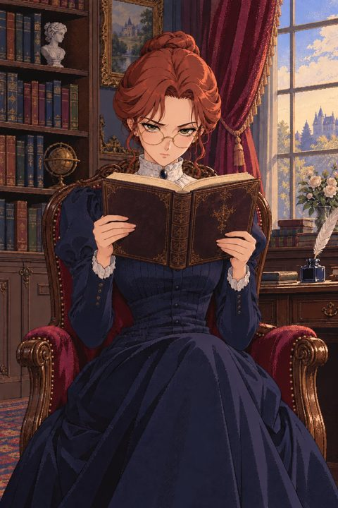
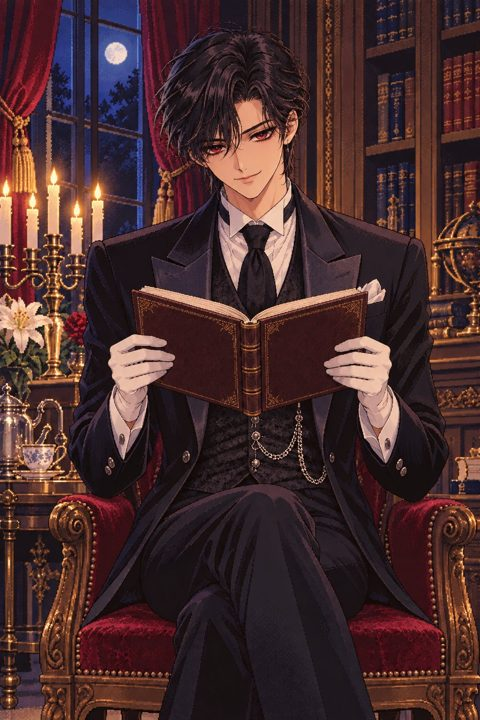

集中して、お嬢様
勉強中にスマホを見ると
先生に「お嬢様！」と叱られます。
無料 · iPhone / iPad
使い方
- スマホを机に立てて、授業時間を選びます。
- 先生は本を読みながら、静かに見守っています。
- スマホを見たり席を外したりすると、すぐにお叱りが飛んできます。
- 授業が終わると成績表とカレンダーに記録が残ります。
三人の先生
寺子屋の師匠一瞬の油断も許さない

エレノア厳しい家庭教師(無料)

クラウド夜の書斎の執事カメラは安心してお使いください
視線の判定はスマホの中だけで行われます。カメラ映像や顔写真が保存されたり、端末の外に送られたりすることはありません。
今日も気品をもって励まれますよう。